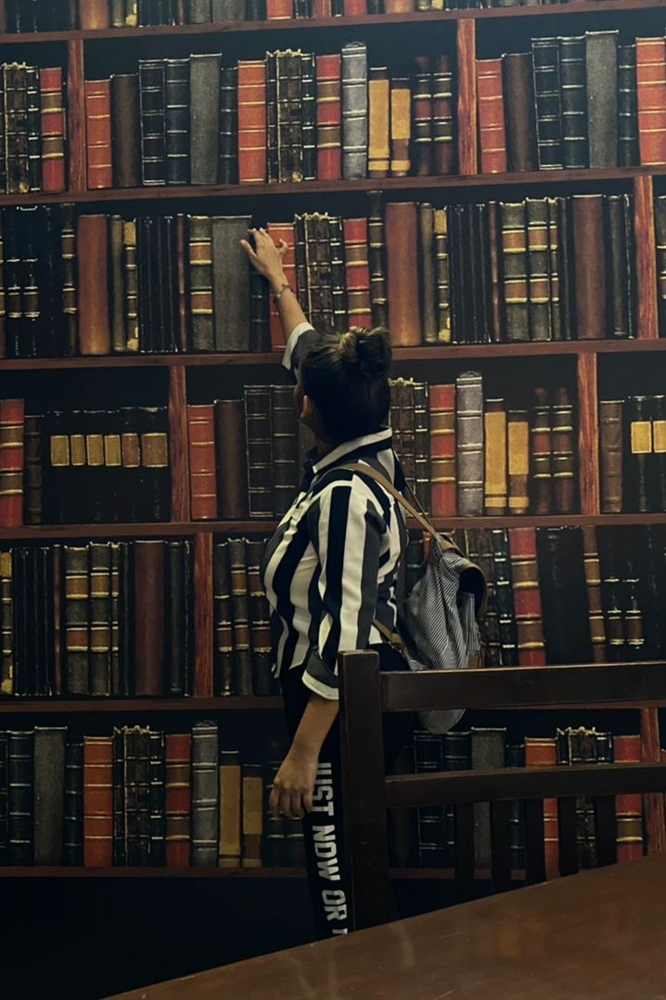
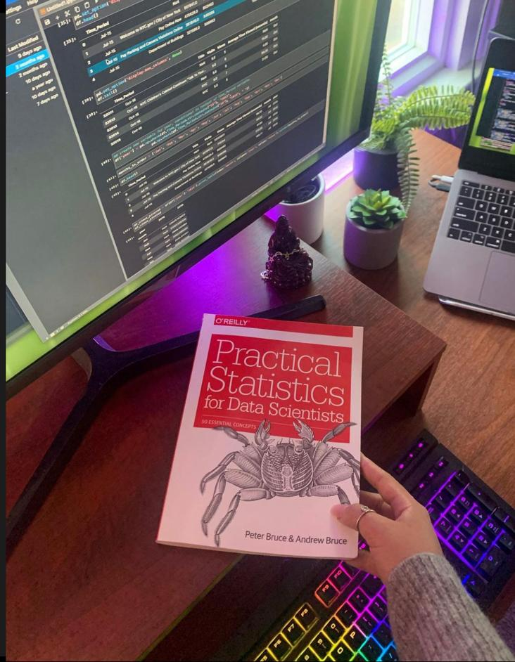
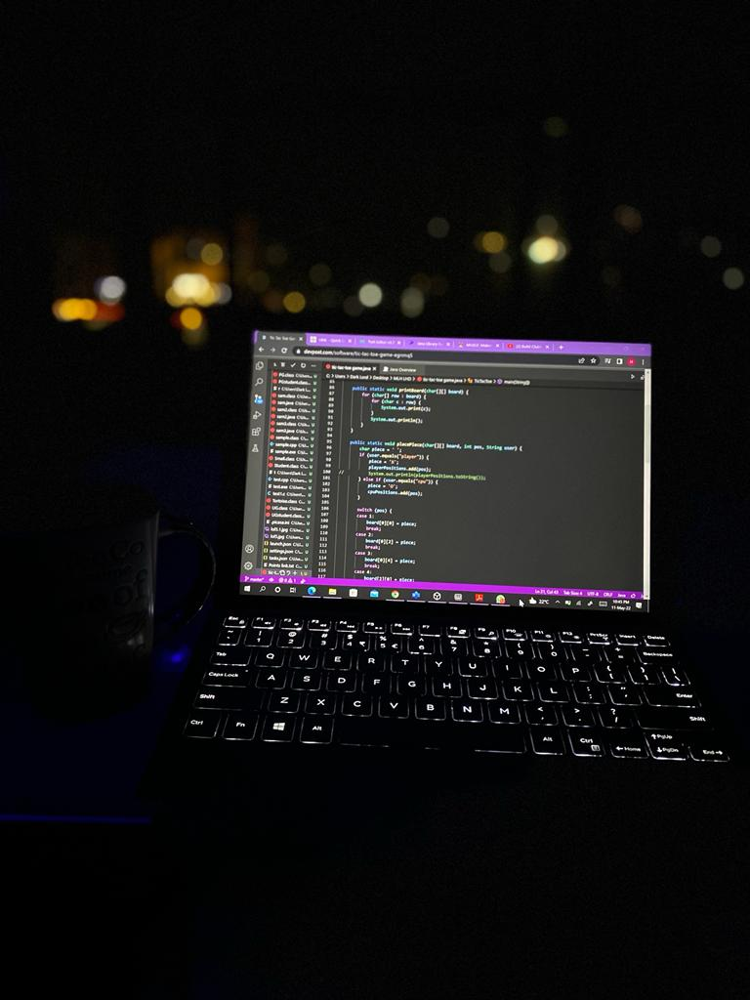
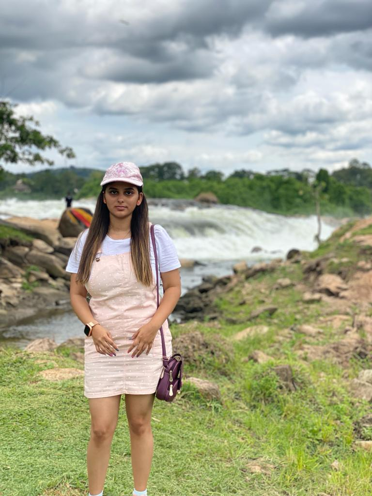
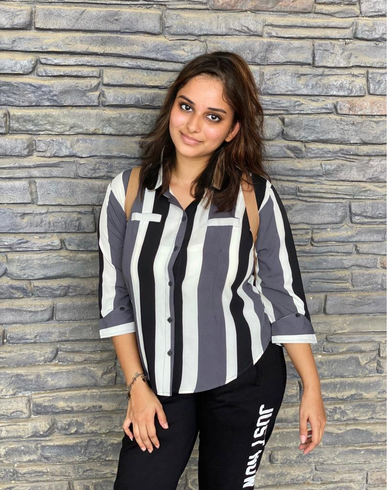
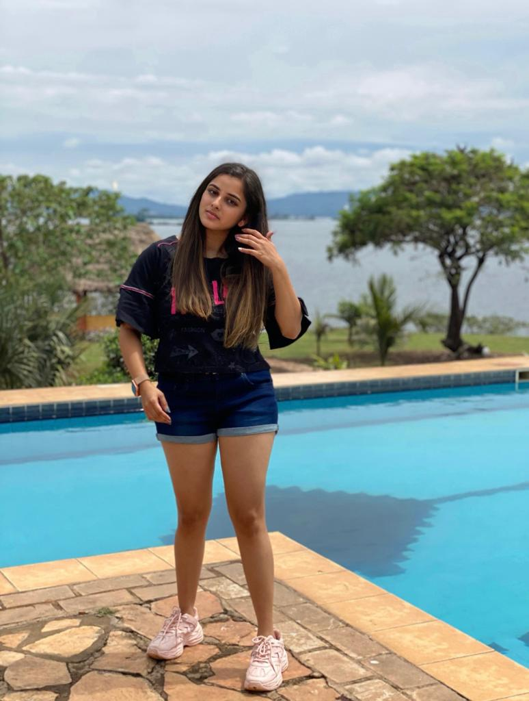
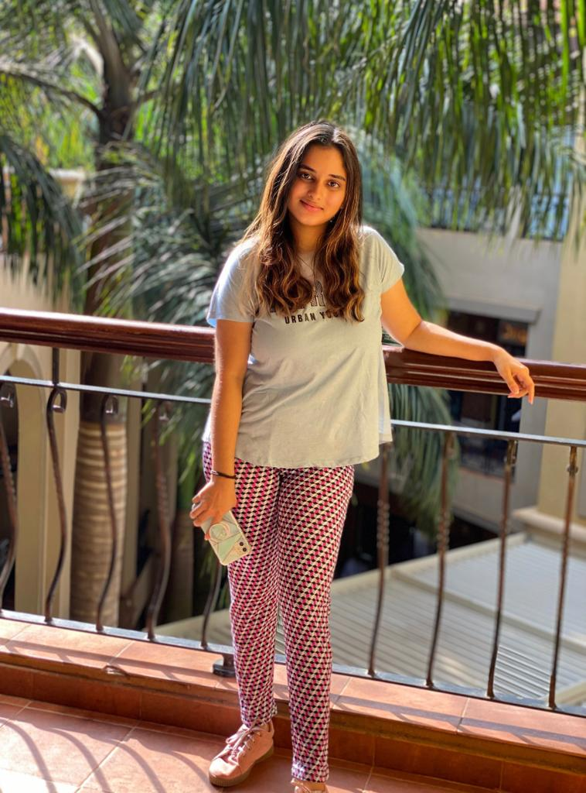
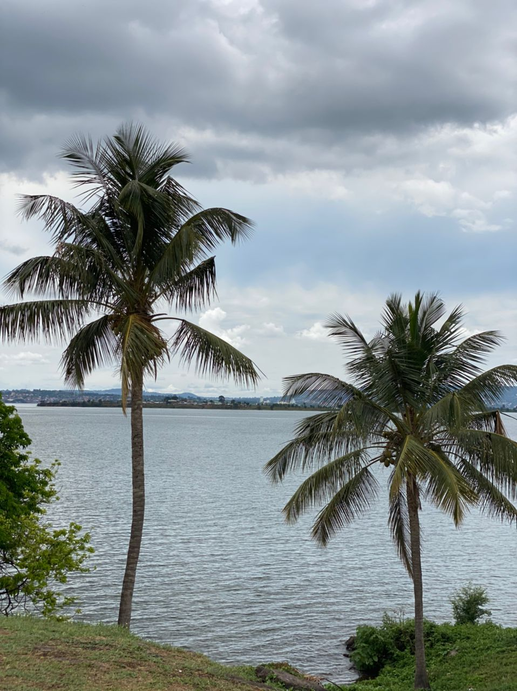
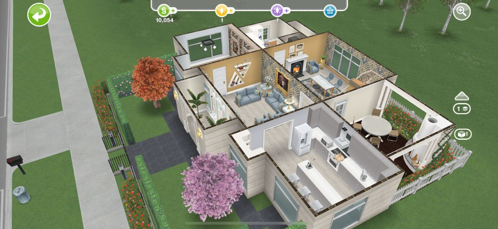
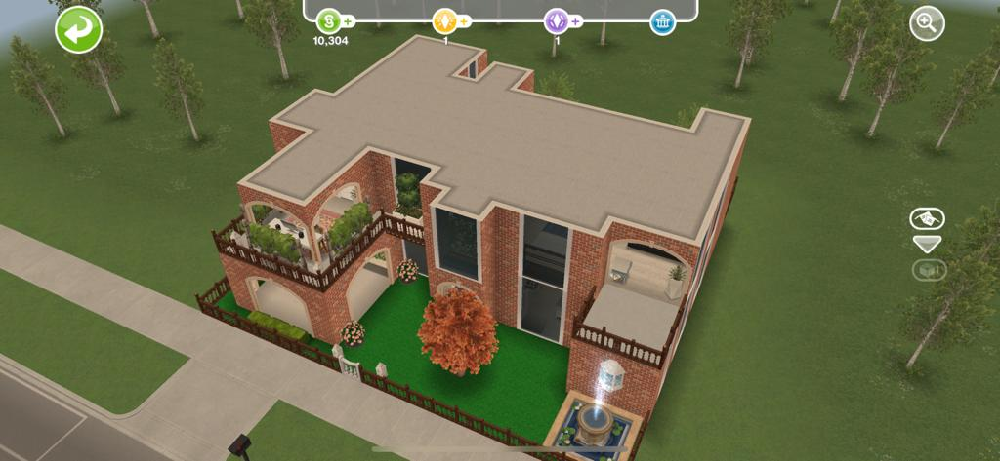

My hobbies and how i usually spend my free time.
- On weekdays, i usually spend most of my free time at home doing some cousre work, coding and watching movies.
- Then on the weekends, i usually go to the library to read some novels and browse the internet to do research about programming languages as i really like coding.💻📚.



- My other interest is i like being a fashion influencer.




- I am also so much into photography and capturing the mesmerizing places across the world🌎.

- Last but not the least, i love interior designing by blending different colours on walls and creating the fine living space that feels like home.
I use the SIMS FREEPLAY application to create my designs and give it a furnished look🏡.


There is more information on hobbies in the below document